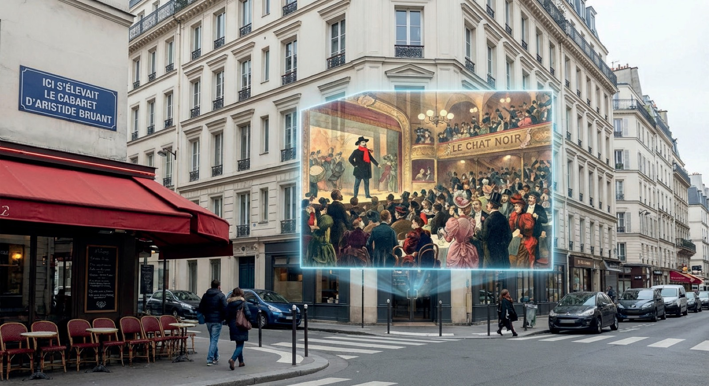
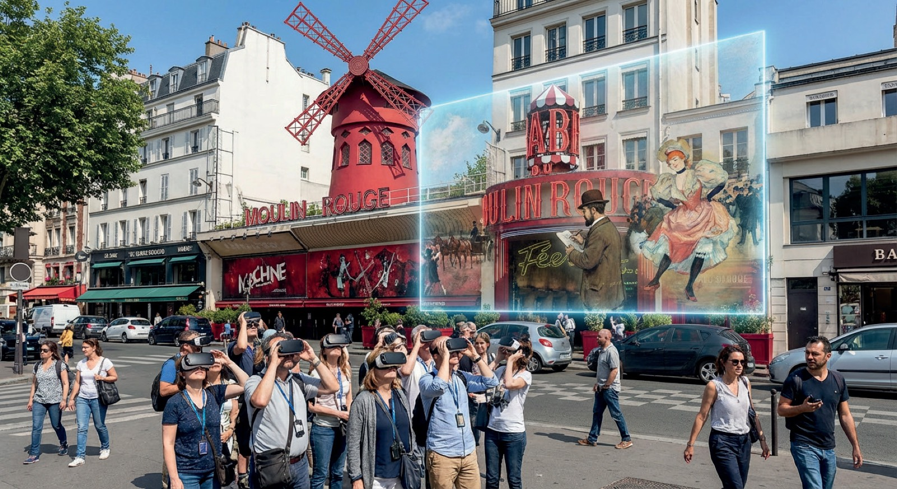
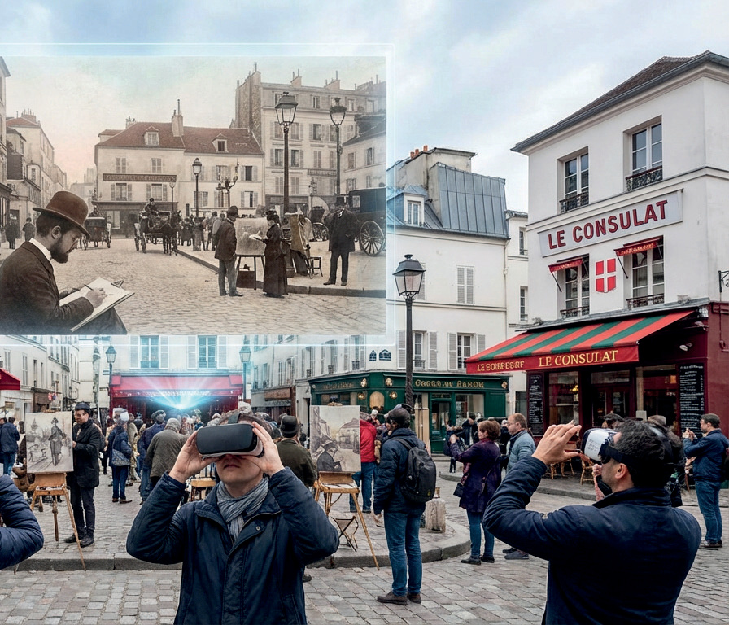
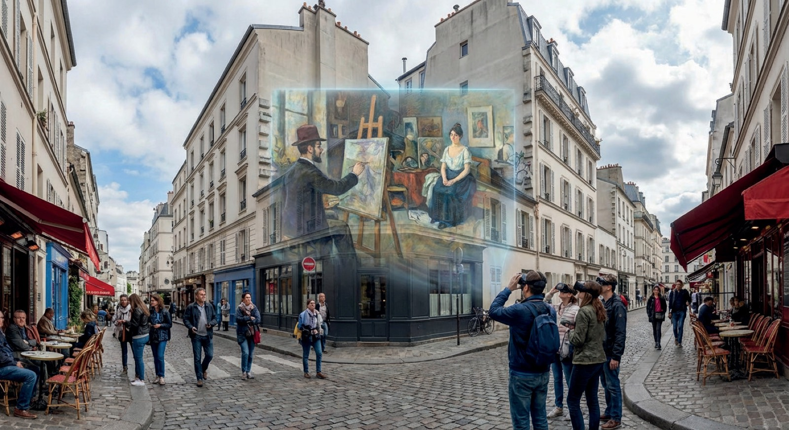
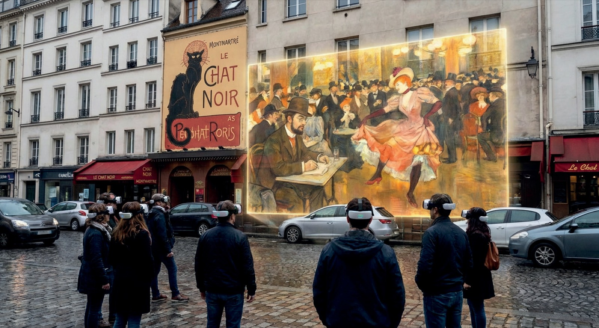
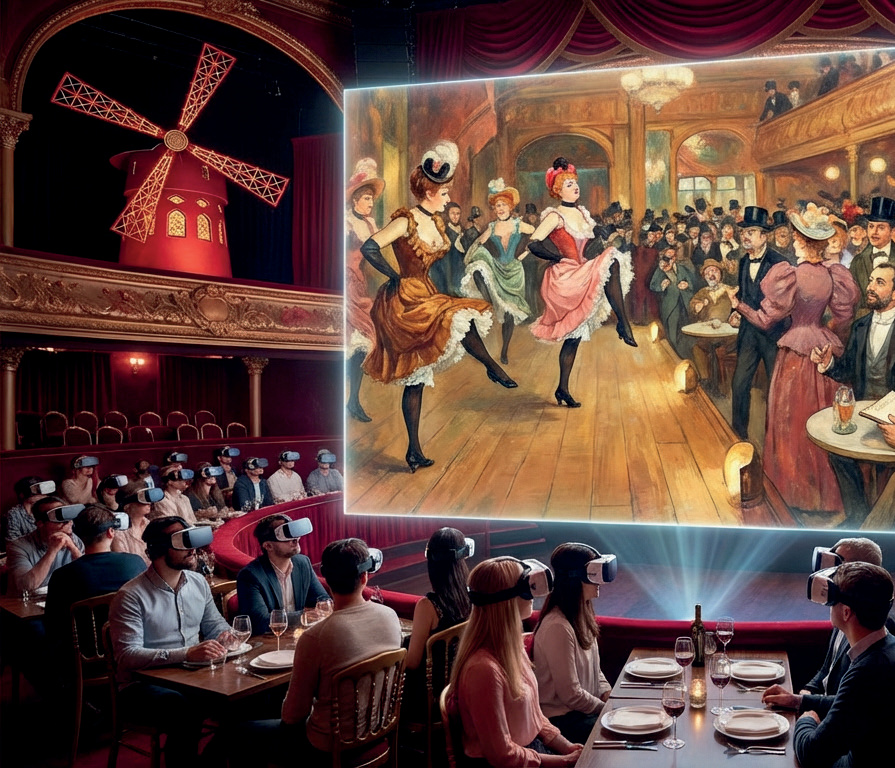

La Goulue, Jane Avril, Suzanne Valadon : les muses sortent de l'ombre et prennent la parole.
Une déambulation où le spectacle vivant et la réalité mixte réécrivent l'histoire à travers le regard de celles qui l'ont vécue.